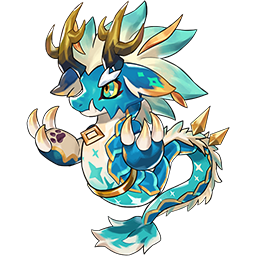
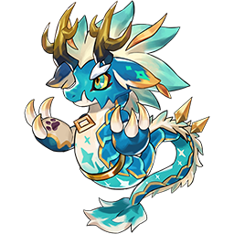

3년간 캐주얼 RPG 장르의 모바일 게임 두 개를 성공적으로 출시하고 라이브 서비스 운영을 경험한 게임 기획자입니다.
열정이 넘치는 팀과 함께 혁신적인 게임 개발에 기여할 수 있는 기회를 찾고 있습니다.
'닌자 키우기 온라인'과 '닌자 서바이벌 온라인'의 개발 초창기부터 출시 후 라이브 서비스까지 기획자로 참여하였습니다.
E-mail : kyunghwan789@gmail.com
Mobile : (+82)10-5422-9353
프로젝트 설명
'닌자 키우기 온라인'은 2021년 출시한 방치형 RPG 장르의 모바일 게임으로, 뛰어난 성장감과 5개의 표창 덱으로 구성되는 독특한 시스템으로 많은 유저에게 사랑받았습니다. 이후 블록체인을 연동한 P2E 요소와 이어진 NFT 소환수 출시를 통해 한 단계 더 도약을 경험하기도 하였습니다.
3년이 넘는 글로벌 서비스 기간 동안 꾸준한 성과를 기반으로 방치형 RPG와 P2E 게임 장르에서 유의미한 입지를 가지고 있는 프로젝트입니다.
직무 설명
필드 기획
던전 기획
이벤트 기획

제작 배경
콘텐츠 설명

슈텐 도지

이바라키 도지
몬스터 텐트
회고
이벤트 기간 : 2024.02.05 ~ 2024.03.03
이벤트 기조

목표


 


*청룡 소환수 등급 : [희귀] >> [영웅] >> [전설] >> [신] >> [초월]
청룡 소환수

피해량이 낮지만 넓은 범위의 적에게 피해를 가하고 영역에 위치한 아군들에게 버프를 적용하여 유저의 생존성을 강화하는 스킬.

범위가 한정되지만 단일 대상에 대한 피해량이 증가하여 보스에게 보다 강한 대미지를 가할 수 있는 스킬.

투사체가 몬스터들을 추적하여 보다 효율적으로 적들을 처치할 수 있는 스킬.
이벤트 진행
여의주 획득
타임 특가 오퍼 상품
성과

프로젝트 설명
'닌자 서바이벌 온라인'은 2022년 출시한 서바이벌 RPG 장르의 모바일 게임으로, 로그라이크의 재미를 온라인 환경에서 친구들과 함께 빠르고 박진감 넘치는 경험을 제공합니다.
직무 설명
챕터 기획
던전 기획
기존 챕터
배경
개선 방향
몬스터 스폰 방식 변경
클리어 조건 변경
의도

폭주 시스템
비기 시스템
의도
캐릭터 컨셉에 맞춘 비기 스킬 제작

수리검을 날리는 캐릭터 '루호'.
'루호'를 중심으로 분신들을 소환한다. 플레이어 스탯에 비례하여 분신들의 체력과 공격력이 증가하고, 분신들은 가까운 적을 향해 수리검을 날립니다.

폭탄을 날리는 캐릭터 '루시'.
플레이어가 지정한 위치에 하늘에서 떨어지는 거대한 폭탄들을 생성합니다.

도를 휘두르는 캐릭터 '켄군'.
도를 빠르게 휘두르며 플레이어가 조종하는 방향으로 여러 회차 돌진합니다.

화살을 쏘는 캐릭터 "료코".
화살들을 부채꼴 모양으로 빠르게 난사합니다. 캐릭터는 위치에 고정되고 플레이어가 조종하는 방향으로 회전합니다.